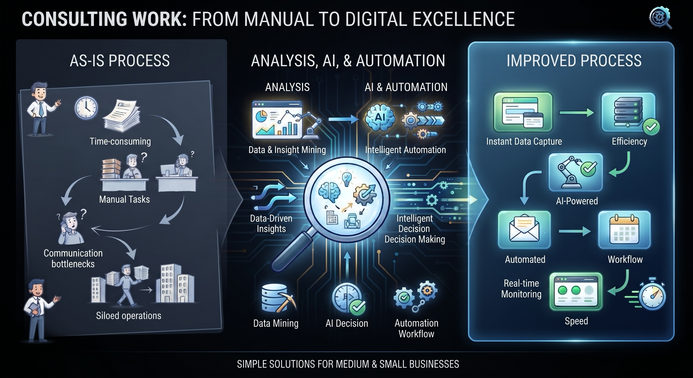

Eliminate front-door structural bottlenecks, remove manual processing waste, and capture bottom-line savings through digital systems built for global scale.
Initiate Operational Audit
Fixed parameters and bottom-line target outcomes for margin protection.
| Dimension | In Scope | Out of Scope |
|---|---|---|
| Region | Global applicability across facilities adapting for local nuances. | Region-specific clinical licensing and formal compliance filings. |
| Facility Size | Small clinics, mid-size multi-specialty centers, large hospital networks. | Greenfield hospital construction and capital real-estate projects. |
| Functions | Patient onboarding, clinical flow, revenue cycles, supply chain, workforce analytics. | Clinical/medical decision-making, diagnosis, and direct treatment protocols. |
| Metric Type | Target Performance Metric | Example Target Objective |
|---|---|---|
| Financial | Revenue cycle leakage reduction / profit margin protection | Reduce claim denial rate; improve EBITDA margin by 3–5 points. |
| Process | Patient onboarding turnaround time (TAT) | Cut average onboarding TAT by 30–50% (Registration → First Touch). |
Integrating Theory of Constraints, Lean operational waste removal, and structural Six Sigma data modeling.
Resolving the single structural bottleneck blocking capacity: the "Front Door" patient registration loop.
Systematically extracting unneeded resource friction across the standard DOWNTIME spectrum.
Targeting turnaround variance to protect the bottom line from unpredictable process extremes.
Targeted, automated system deployments designed to accelerate functional flow.
Phased delivery governed by rigorous hybrid PMI management standards and Agile execution sprints.
| Phase | Timeline | Core Execution Parameters |
|---|---|---|
| Diagnostic & Quick Wins | Immediate (0–3 Months) | Pilot intake chatbots, setup core reminder automations, construct claims-denial dashboard v1. |
| Medium-Term Optimization | Intermediate (3–12 Months) | Deploy smart AI scheduling systems, automate workforce credentialing, scale CRM modules. |
| Futuristic Transformation | Enterprise (12+ Months) | Full predictive analytics platform execution, complete revenue-cycle AI overhaul. |
Provide operational details below to route directly for diagnostics analysis.